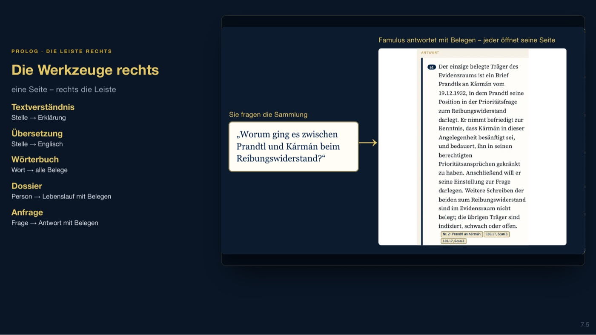
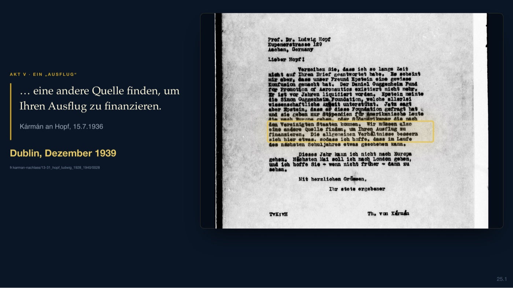
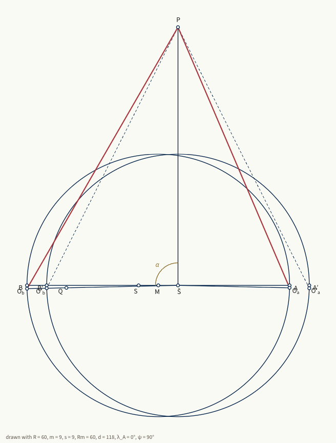
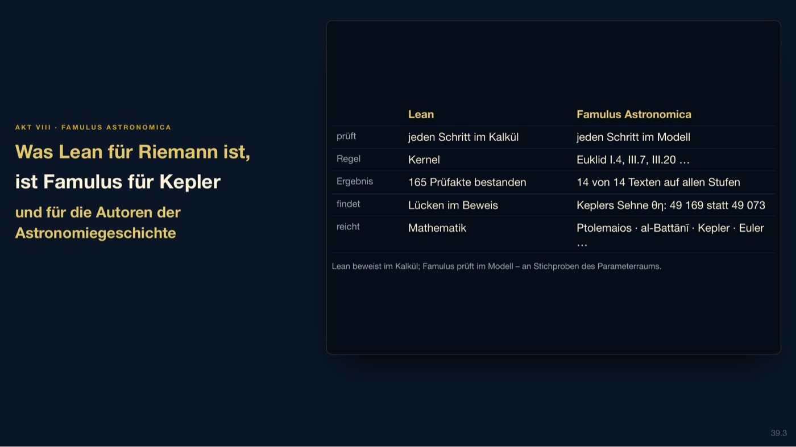

The Kármán Papers, Surveyed with Famulus
Famulus Deep Reading
Famulus Lectures · No. 1
Gerd Graßhoff · Philosophisches Institut, Humboldt-Universität zu Berlin; Forschungsinstitut, Deutsches Museum
Deutsches Museum, Munich, Research Seminar Room · 23 November 2026 · Lecture at the Deutsches Museum
Edited version of the lecture of 23 November 2026, produced with Famulus. Translation from the German; the German version is authoritative.
License: CC BY-NC-ND 4.0 · Version 1.0 (Entwurf) · As of 2026-11-23
Suggested citation: Gerd Graßhoff: The Kármán Papers, Surveyed with Famulus. Famulus Deep Reading. Famulus Lectures 1, Deutsches Museum, Munich, Research Seminar Room, 23 November 2026. https://famulus.lettre.ai/lectures/1/en/
Opening
Thank you very much for the opportunity and for the early visit on a Monday morning. I will try to get to the point very concisely, the point that I would like to report to you and put up for assessment. We are considering whether we can launch a funding application in order to show what I present not merely as a technique with an aha effect, but as a useful tool for research, for the museum, and for those who work with it. That is what I want to argue for today. I will record the talk in order to present a conference tool by Famulus: after completion, the recording is transcribed, combined with the slides, and published in such a way that participants can read the talk annotated with the slides. In this prototype, that does not yet work immediately today.

Fig. 1 · The Kármán papers, surveyed with Famulus (Slide 3)
I do not rely on the most current technology, but on the tradition of the history of science with Erasmus (→ Fig. 1). I have placed myself in this tradition, and what I want to argue for I do not want to call AI at all. This is first a question of terminology: what are we talking about. We are not talking about agents such as Claude or other personalized actors, but about something that I would like to call Famulus – following the usage of the Renaissance and of humanism in Erasmus.
Erasmus uses the term Famulus in his works. We see here Dürer in one of his inimitable premonitions of terminology: Erasmus writing with his right hand, holding something in his left hand. As always with Dürer’s engravings, the question is what we actually see here. On the right he is obviously writing; on the left I interpret it as an inkwell – but allow me the gag in order to push the metaphor further: in my reading, that is Famulus. Famulus is Latin for the assistant. And we know from many letters of Erasmus that the Famulus is the assistant, who can be very learned.
He has a network of assistants who worked for him. In this support work they were allowed to bring in every kind of competence, only not one thing: to contribute a scientific judgment of their own.

Fig. 2 · Riemann: four days on all channels (Slide 9)
Transferred to the activities of the last four days, I try here once again to take up why, in what happened in the last four days, with reference to Riemann’s theorem, what acts of communication took place in the scientific community in the last four days (→ Fig. 2). This is monitored live. I have a science monitor that records, documents, and evaluates all publications, all communications that are accessible at all. In order to understand, in order to see how this process of scientific creation functions. And here there was an announcement in the middle of last week that Riemann’s theorem is proven. At first that is only a steep claim, especially when one sees that the proof did not occur in conventional mathematical form, but through the submission of 250000 pages of printed code.

That is the first problem: who checks the code (→ Fig. 3)? Is that already knowledge? Of course not. But – and this is the process I show here – a lively process of scientific communication takes place, which out of what follows the announcement ultimately produces something that I am convinced will either turn out to be knowledge or a precocious announcement with gaps that can no longer be closed. How the game ends, we do not know.
I would like to use the parallelism: already in these dialogues of the scientists with the use of the technology we find statements as in the initial announcement: yes, I have found this proof, working with Claude. Who is Claude? Claude is the technology. Due to the naming, it is personalized by the tropics – that is precisely what I want to avoid, because it suggests that we have a scientific actor here. In my reading, we do not.
Lean, the prover, is a mathematical technique of automated proving that is used here. This technique has worked through these 250,000 pages and demonstrated that this proof is complete and, according to the community’s entire understanding of the use of this technology, correct.
What is Famulus and what can it do?
Prologue

Fig. 4 · The Kármán Platform. The papers comprise 1,066 folders with 38,213 pages and are reachable as a platform with one click. (Slide 13)

My reading is this: what Lean is for mathematics, I would like to introduce as Famulus for the history of technology and science (→ Fig. 4, Fig. 5). That is a big announcement on a Monday morning – forgive me, among friends this is my attempt to stick my neck out a little. To show this, I would like to connect it with the publication of the Kármán papers, as I have edited and prepared them. The papers you see here are accessible to this extent; work is still being done on them, so that at present 328 of 1066 boxes are fully digitized.
The machines all run in the background and dominate my pension. We are at a third, after all, and in the next two weeks presumably all remaining pages will be digitized. You will already find an automatic categorization here. You can see that these papers comprise approximately 204 correspondents, which one does not see in the finding aid. The numbers may still change due to the processing; this is provisional.
240 papers, 142 manuscripts by Kármán and so on. Patents, but also topics such as turbines, tubulin, referee functions, bridges that collapsed due to vibration phenomena, and the like. This is systematized and already automatically divided into categories by Famulus.
All of this can already be viewed and used. On the left side of the website you see a registry that can be filtered by the categories, that is, whether it concerns manuscripts or correspondence; then all correspondences are listed, and one can group them. In the middle you will see that one can open the individual documents. On the left side here the facsimiles are set, so all facsimiles are immediately visible. On the right side the transcription. It is also capable of transcribing mathematics and similarly more complicated texts, including all foreign-language texts, in an OCR-compliant way.
One can copy them in order to create LaTeX or other publication documents from them. At the top one can navigate, and this can be done so quickly that, I think, good readability on the screen is guaranteed. Here is the facsimile edi- variant of this letter. Then one already has editing tools in this environment. So this is now the user perspective, how I can use access to this state. You have seen that approximately 700000 sentences are individually digitized and identified.
Famulus is therefore not only capable of showing facsimiles in translation; the analysis that I can now show you works sentence-precisely and much more precisely still, including medial additions, designations and other information carriers. One can click on sentences. When one clicks on them, one selects a segment – that is what I called it in the terminology – in order to do something with it. A side effect is that one can cite each individual one of these segments and give it as a quotation in one’s own publications; the publication medium of this quotation is then marked as a clickable link, and the linked passage is shown to the user. One can therefore cite sentence-precisely. And not only that: by selecting – now I am a little fast – one can also, and this the AI, Famulus, must in any case accomplish, interpret the meaning in a completely transparent way.

So that means showing text understanding (→ Fig. 6). What is actually being said here? What are the implicit presuppositions of this passage? All of this is shown in the right-hand bar. One can – this system would learn; on the basis of newer documents this text understanding will be continually updated, revised, and thereby also become ever more validated, more correct and more certain.
Translations can be set as desired. I have configured the main European languages, but it can be translated into any language, into 140 or 70 languages. One can also have entire passages translated live; one does not have to preserve anything. This happens so quickly that a translation takes place within a few seconds.
In a few clicks one can also select entire paragraphs. Then one can ask for names and subject areas and have the corresponding folders called up. Or – Famulus automatically creates dossiers through the processing of these sources.
It also processes them with other bibliographic or biographical reference works, so that the dossiers become ever more valid, more extensive and more accurate. Here in the right-hand column, for a particular page, I can open the dossier, as can be glimpsed here, and display a dossier on a person who is mentioned here. It typically contains the main biographical stations, the main works and what might be of particular interest for the context. One can also make inquiries, ask questions of any kind about this passage, about this text, but also within what I call overall the evidence space – that is, what comes into question as evidence for an answer. I would like to explain in a moment why the answer is not fed and validated from some Wikipedia as in a ChatGPT inquiry, but rather the validation here is a justification of the correctness of the answer that is strictly grounded in the theory of science. That is what I call validation.
One can therefore make any inquiries, here something about the correspondence of Prandtl. I am only showing this; these are the possibilities that you receive if Famulus were usable. You have text understanding, you have the translation, you have dictionaries. I have built the dictionaries from a concept of the Oxford English Dictionary combined with Wittgenstein’s philosophy of language of rule-following. That means these dictionaries are created by Famulus itself on the basis of the evidence document space, in the style of all relevant characteristic passages, with explanations of the terminology in the original language.
Whether Hungarian, Latin, Greek or English, it does not matter. The dictionary is not only created universally according to the best procedures of linguistic lexicography, but also context-relatively. You can select meanings for a particular period. You can even identify meanings for particular authors and relative ways of speaking. And if you really want it hard in research, you can also work out differences in the use of terminology between two different authors of the same epoch. Those are the dictionaries.
Translations are connected with them. This is to be coordinated so finely that the translations also use the text-understanding analyses of the dictionaries. These are the tools that the researching user can already use with such an archival holding. One more example, to show that this should not yet be all.
Back to what makes Lean or the current Riemann debate so interesting: the prover participates in scientific communication, it is a participant in this knowledge generation. That is how I also understand Famulus: an instrument in the sense of Erasmus, without its own judgment and without a license to it. That is the role of the researcher, of the scholar; Famulus is the producer of aids.
In the execution and carrying out of the aids, both hands of Erasmus work: the writing researcher, the inkwell producer, who works with Famulus.
So, this is still the visualization for it. Oops. Oh, now unfortunately I have turned the page incorrectly.
We come to the papers. The papers now consist of 38,000 digitized pages; the entire papers are digitized.
The papers are digital
Act I

Fig. 7 · The Kármán papers – all online. 32 randomly drawn pages show the mixed medial form of the papers, each as facsimile, transcription, translation and commentary. (Slide 24)
As you can see here: a mixed medial form (→ Fig. 7). Printed material and typewritten typescript, manuscripts, diagrams – all sorts of things lie in an archive. The OCR quality in Famulus is developed so well that even Hungarian letters with all sorts of accents, which I myself do not understand, can be transcribed and translated well. We have facsimile, transcription, translation and commentary.

What else can we do with Famulus (→ Fig. 8)? To illustrate this briefly with this example: we have objects here without having the originals in the house. The originals are in Caltech and were digitized there in a comprehensive campaign. I was able to buy the microfiches from the University of Bern, with the possibility of working with them.
Famulus reads along
Act II
I then fully digitized it ten years ago; these digital facsimiles form the basis and have now been prepared by me. We have just seen this Kármán papers. Now there are interesting research questions.

Fig. 9 · Noting with evidence. In the dossier, facts about Hopf are noted with evidence, accepted, rejected and corrected; the researcher’s judgment applies. (Slide 29)
Just a few examples so that you can sense what it is about (→ Fig. 9). You can identify questions from the papers that continue to interest you in research; you can translate – we have done all of that.
A Research Question
Act III

Fig. 10 · What did Kármán see in Aachen? (Slide 31)
But we can also find interesting questions, as in this letter to Fromm from Kármán from the period after the Nazi takeover (→ Fig. 10). It is a letter from Kármán from Pasadena, 26 November 1934, with the note that he had just been in Aachen again. As you can see here – or not see, in any case I tried to underline it –: What does Kármán say about Aachen, how did he find his visit to Aachen?
I was in Aachen this summer and found conditions quite unchanged. So, that is actually astonishing at first. ’34, he is in exile and finds the situation or the conditions unchanged. He writes to Fromm. A little further on he writes, not advisable to express one’s disapproval in a café. So a few footnotes come in there, where the situation was probably not quite as it used to be.

And then Fromm writes back: „und zwar bin ich wohl nur als Jude entfernt“ [transl.: and indeed I was probably removed only as a Jew] (→ Fig. 11). What exactly he meant by that is a question of the interpretation of this text, with which one can bother Famulus. Whether one is satisfied with the answer is, at this stage, a different matter for now. But these are the interesting research questions that one can discuss with such an instrument – even if only as Famulus, as an auxiliary assistant, if you will. The capacity for judgement lies with the researcher who has the instrument himself.

Fig. 12 · Who asked Kármán for help? (Slide 37)
So: unchanged – for whom (→ Fig. 12)? Why does Kármán write this? Who asked Kármán for help? Now you see possibilities for using this archive that can no longer be carried out manually in practice: running through the entire archive. And with this simple question – who asked Kármán for help? – the normal indexing techniques for dealing with such active archives fail; they cannot be answered. Here one can solve them directly with Kármán, and you see a chronology of all documents in which some correspondent asks for help.
But then it continues: What could Kármán do? Kármán says his influence was very limited; he advises Hopf to find another source. On the right-hand side – unfortunately the contrast is not good – you see a diagram of all the boxes the archive contains, and a reference to the locations of all correspondents who asked for help. You see that this is distributed across different boxes.
The Previous Path
Act IV

Fig. 13 · Every item classified. Every item is classified by its type: 5,676 letters, 3,903 notes, 3,347 reports, plus patents in 64 folders. (Slide 40)
With a finding aid in an archive, you have no chance of answering such a simple question (→ Fig. 13). Famulus can. Here a case emerges in which research questions can be answered that cannot be resolved in the traditional way, solely because of the size of the archive. Every single item is classified, and you can cite every single sentence and reuse it in any publication.


Fig. 15 · Milliseconds. The lemma search for “beurlauben” finds six hits in 8,745,834 words in 0.7 milliseconds. (Slide 42)
What is decisive for this even arriving at finite results at all is the speed at which all of this happens (→ Fig. 14, Fig. 15). That was a large part on which I certainly spent some months, in order to enable a search by lemma, that is, by the basic linguistic form of grammatically inflected forms — so not only help, if someone writes, how does someone ask for help in a letter, then you cannot search for help, but you have to take into account the various ways of expressing a request for help. This search makes that possible, and indeed, as you can see, the lemma search across the entire corpus of 700000 sentences shows six hits in 0.7 milliseconds. You need this speed so that you can then use such speeds to be able to run through the larger contexts as well and to be able to process them in finite time. So queries on the dossier for a person and their background, when called up within a period of 1.3 milliseconds.
Famulus has the personal profiles of all persons mentioned in a text available within 1.3 milliseconds. But finding is not yet understanding — the next step is the question to the papers. Once you have all the passages, you must process them in order to produce from them an understanding, correct, substantial result with which you can continue working.
With Famulus
Act V


Fig. 17 · One case from four boxes (Slide 45)
So you can ask questions of the papers (→ Fig. 16, Fig. 17). Searching the boxes is extensive, as we can now sense, but it requires this speed in order to find a compilation of all relevant passages within a few seconds. Every passage has an address. This is important so that Famulus can justify while disclosing all evidence. No black box, nothing hidden.

Thus we find answers in this correspondence, in which Kármán, in response to a concrete request for help and support, says: „Leider muss ich gestehen, dass mein Einfluss sehr gering ist.“ [transl.: Unfortunately I must confess that my influence is very small.] This letter reveals a typical situation: Hopf writes to Kármán, you once wrote to Courant (→ Fig. 18). For insiders this is a real tip on how to get further help, which Kármán obviously cannot give. And in the letter to Hopf, Kármán writes that you must find another source to finance your excursion – that is, the exile.
The Evidence Space Grows
Act VI

Fig. 19 · The Answer Has Open Ends. The chronology ends openly: Courant and Heisenberg are named, but their holdings are not documented in the papers. (Slide 51)
Dublin, December 39 (→ Fig. 19). So, these are all still references from the sector Find Something Relevant. Now we have something here; if we put all these references together, we see that of course this Kármán papers, I called it with open hands, precisely this reference to Courant. But Courant is not part of these papers. Or Heisenberg is named, but the Heisenberg correspondence or everything concerning his papers is not included here.

Fig. 20 · A Network of Holdings. Registered, signed nodes link external holdings so that every item remains identifiable and citable in a decentralized way. (Slide 52)
The idea is to build a Famulus network: Famulus Reference (→ Fig. 20). This links holdings, and technically it should be so easy to install that any interested institution holding such archival holdings can register and sign up. A minimal technical installation is necessary, an internet connection as well, everything should be secure, everything is computed locally, the usual EU standards are met. Famulus can then, at this speed, not only process the local holdings but a network of all holdings relevantly linked to one another. Decentralized, signed: every single item, every single sentence is identifiable and citable.
Can the answer be trusted?
Act VII
Errors are always possible, even with a Famulus, however good it is. One does not have to replace or discard it right away just because errors occur – as here with an OCR in which a recognition error occurs and instead of “Zensur” “Lessor” is recognized. That happens, especially with handwriting recognition. It is far better than Transkribus, very good, but errors do occur. Famulus allows curation of the holdings, and indeed highly efficiently: once an error has been identified, it can be corrected with version control and enters into the improvement of the holdings.

Fig. 21 · Factually validated. A language model alone sounds plausible and smooths over gaps; Famulus gives every statement with an address and shows gaps. (Slide 58)
I will not go into this further (→ Fig. 21). What matters is the aspect of the requirement of Famulus that distinguishes it from all other AI offerings – in my statement, quite drastically clear: the results achieved here are factually validated.

That means their correctness can be traced and checked by the researcher (→ Fig. 22). And here we are back in the analogy to Lean. Lean has now, is a program, analogous to Famulus, which carried out the computation of the proof of the Riemann hypothesis that no one can trace in detail themselves. And what you see, what is happening right now in science communication, is namely a linguistic alignment of the language of symbolic processing by Lean, unpalatable to humans, onto a level such that this proof is translated into a proof comprehensible to mathematicians. And that already produced first results and proposals after five days. So there are now the 250000 pages of printed code reduced to 55 pages of compressed scientific proof text, and it is currently being worked through by the entire community.
Typical of the fact that knowledge is not an individual process and insight is a collaborative aspect of global research. Now we come to Deep Reading. In the Festschrift for Lieber Tauch I introduced the term Deep Reading: there is Distant Reading, Close Reading, and now there is something third, and that is what Famulus does – Deep Reading. AI techniques allow asking about the meanings of the expressions and of the scientific texts. Not only about symbolism, not only about syntax, about expressions, about modes of expression, about strings, but about content.
I show this using the study of Kepler’s collected works.
Here you see a passage from Chapter 23 in which Kepler introduces a sentence. He published a result for an astronomical model with which he works and states the numerical figure that a certain quantity, abbreviated DC, has the value 61 148. I have not yet seen any publication known to me that has recalculated this value. Where does it actually come from? How does Kepler arrive at it? Normal historians of science pass over such passages and say that someone will calculate it at some point. That no longer happens now. Now we have Famulus.
What does Famulus do? As with Kármán, it has analyzed the entire text down to every single symbol and every single diagram. That allows plausible indications. Kepler lays out his working method fairly openly, but not always consistently – a highly difficult author, yet generous with information about how he does something. And indeed, in the collected works, Chapter 15, there is a passage in which he says he uses tables here to calculate.
Only quite generally, namely the tables of Landsbergius, triangle tables, so if you will sine tables and related trigonometric tables. So, what did Famulus do? It automatically loaded the facsimile of this table from ETH Zurich, it was immediately taken into the holdings, digitized, which then also takes about half a day until a table is correctly digitized. All the individual, this is such a table page, tables must be digitized in such a way that every single calculation cell is reproduced correctly. So the demands on the OCR are very high. So, and now the task is Famulus, you are a Famulus, you do not need to judge, simple task, recalculate the numbers, did he then use this table, these tables?
And if so, how?

Fig. 23 · The calculation reconstructed. Recalculated, the calculation gives 61145, while the print says 61148: the last two digits were dropped. (Slide 71)
No one has yet carried out this task as a Kepler researcher, and I count myself among them (→ Fig. 23). Simply too tedious, elaborate, time-intensive. One can hand the task over to Famulus. One must grasp the problem situation at issue, convert a sine function – that takes place automatically in Deep Reading –, and then the calculation is run through.
And by now you see why the high speeds are necessary. The table, every single cell is multiplied as the handling of these tables requires. And you get out, recalculated, that in print 61148 appears, in the recalculation 61145. A small deviation still, but already such that as a historian one can be satisfied with it. The further questions are then again interesting and rich, why this difference. Did he perhaps have a different table, a different edition, did he miscalculate, which Kepler often does.
After all, he did not always calculate himself either, but had, like Erasmus, some Famuli not otherwise considered in the literature who worked for him, precisely to carry out the calculations. Every single step is checked. The validation of a result makes it possible to inquire at every calculation that the Deep Reading of a text such as the Astronomia allows: how did it come step by step for Kepler to this result? Every single step is shown. This can be used to generate one’s own new publication series. I called them Expertise.
Expertises would reconstruct certain calculation blocks in a work such as Kepler’s, calculate them through and comment on them – here the bipartition of the eccentricity on the basis of the vicarious hypothesis –, as a good, critical editor of these works also does.
Automatically generated. Then there are requirements for publication that I have compiled into a Famulus certificate: conditions that this text must fulfill in order to meet the high claim to correctness. If one has this certificate, one gets a publication that not only makes the proof fully transparently clear, but also interprets and displays the graphic means used, the diagrams.
Continuing work in the Notebook
Act VIII

Fig. 24 · The model moves. Kepler’s Fig. 4.10 is moved as a model with 14 objects and checked across the parameter space. (Slide 83)
To understand what actually takes place in the geometric models used: all these drawings are generated by Famulus; they are not drawings taken from publications (→ Fig. 24).

I must come to the end now (→ Fig. 25). So what? What Lean is for Riemann, Famulus is for Kepler. And I hope I have been able to communicate to you that, in my understanding, it is a prover and a proof-conducting instrument for the history of science and technology, in such a composite of works of the history of astronomy, so I hope.
Back to Kármán
Epilogue

Fig. 26 · A machine for this house. Kármán writes to the Deutsches Museum on 2 November 1923 because Junkers’ very first oil engines are to be broken up. (Slide 90)
Since we are now in the Deutsches Museum, one might ask whether there is anything in the Kármán papers that already mentions the Deutsches Museum (→ Fig. 26). With Famulus this is an easy question. Through the finding aid, I believe, this question cannot be answered; I have not really checked. Famulus finds a correspondence dated 2 November 1923, namely Kármán to the Deutsches Museum. Here there was an inquiry from a colleague from Vienna about what would happen to Junkers’ very first oil engines, for they were to be scrapped in Aachen. First generation, off to the scrap heap.
Then came the inquiry: These are after all very important items, should we not do something with them? The inquiry reads, because I would consider it a loss in the general interest if the highly interesting and instructive objects were turned into scrap.

So (→ Fig. 27). Reverse side.
Now I have to see to whom – but to the Deutsches Museum with the inquiry whether these objects could not be added to the museum’s holdings. In accordance with your suggestion, we will turn directly to Professor Junkers in Dessau with the request to hand over one or another of the test engines mentioned. And already you have again such a network of communications that in the end lead, I assume, to these instruments, these machines having been in the holdings of the Deutsches Museum at least temporarily. The answer lies in the archive, but the margins are open: it waits to be linked with the archival holdings of the Deutsches Museum in order to complete the picture and to increase the density of research so that the benefit of Famulus in such a network is further strengthened. Many thanks, that is what I wanted to present to you.
Discussion
Welcome
Speaker 1: So we have also had formative figures at the Jobcenter, and since last year January he has been Senior Scholar here with us at the Deutsches Museum. And since we, well, I saw what Gerd Kasseckert had developed, actually also in the direction of AI editions, wanting to do a lot with AI projects in the future, we have now first gathered a circle of interested people in order to present and discuss this once. And I believe you would somehow need feedback on it.
Speaker 1: Many thanks for the vivid presentation and the idea of bringing different expertise from archive, library and research institute to one table. What can be done under technology, and how could that be combined with projects such as the example of the Seelenplan papers, which use media and these colours? Quite a lot has been developed in recent months and years, questions regarding cataloguing, also in the cataloguing of holdings here in the museum. I will stop now and take comments, impressions and questions.
Gerd Graßhoff: Did I understand correctly: everything would have to be available in digitised form in order to apply Famulus to a convolute? There are interfaces on which one can permit something like a recording in speed research, so that one knows that a certain object is located somewhere in a catalogue, then issues a photography or digitisation order and sends it to the relevant department; as soon as that is fulfilled, the preparation of the information is further processed. I have the largest digital collection of holdings of ancient sundials from 700 surviving find sites, including 3D digitisation of 250 objects. A project is running in Switzerland, and a recording of further sundial finds is running in Israel, perhaps 10, 15 objects, which would then also be digitised, in whatever form, and which one can integrate. Such a research platform must be very flexible and able to take up new holdings in an integrating way. Formerly we discussed norms and standards in endless committee meetings; today that is no longer necessary. AI sets up a complete notation system on its own within 5 minutes. The structural analysis of the texts, where one long discussed whether it had to be TEI standard version 18 or 19, can be dispensed with. I have introduced a new notation, FR for Famulus Register, with a code behind it that identifies everything unambiguously, and one can map it onto one another. I hope in the coming days to be able to speak with the colleague [name omitted] from Basel about the papers of the Bennington. They tried manually according to TEI for several years, effort. For Famulus it is the same whether the numbering uses TEI or something else; to transform it in such a way that it is integrable is 0 effort. The flexibility of integrity is such that what used to be the first headache, whether one can apply it at all, falls away. We have 400 years of registration tradition in our catalogues, one does not have to re-digest that.
Speaker 2: I am interested in how we evaluate the papers. My question: what could the Deutsches Museum do, how could it not only participate but contribute its specific strength as an integrated knowledge space, as a space that not only supplies two-dimensional documents to the library but also three-dimensional objects – that has not yet been addressed at all –, next door is a digitisation laboratory for objects, and mobilise this added value? I was co-responsible for a large project, all German research museums, the open collection information platform, where we would jointly record an estimated 160 million objects in museums in Germany, from natural history museums to art museums to technology museums, in order to create this knowledge space. Such tools would be helpful; of the 54 million euros we applied for, a good deal would be covered there. How have you thought this through, this possibility of integration, what would that mean for the institutions of the Deutsches Museum in order to be able to mobilise this specific strength?
Gerd Graßhoff: The scale of this collection is beyond all the possibilities I have as an individual. The whole thing grows out of the experience I had with [name omitted], where the speaker from [name omitted] already had many means and precisely this integration task. That was not yet possible without this technology on this scale, even a year ago that was not possible in this way. The development of this technology is fast; the TEI was at some point published as Elements and the call for proposals of the Federal Ministry. Element is at its core initially only a Large Language Model, that is, language-processing competence. What we have seen here is a knowledge-processing component, it goes beyond the individual competences into an association of a network through the applications. This technology is needed with the linking possibility in order to go onto the network, with all possibilities of interfaces, transformation, which happens ad hoc. Such a network needs a unifying structure for the user, but the structure behind it can be globally distributed, across many institutions, and can retain their infrastructure, architecture. It does not matter whether it is widely distributed; the user is a local computer with low computing competence on site and high transmission speed via the internet, a networking topology is no problem. With large holdings of material objects there are different versions and efforts pursued to different degrees as to how these objects are recorded. Here in the house we have three extensive 3D recordings. One has a 3D mesh with which one can do something. With a group 20 years ago I digitised the first and to this day only 3D model of the Pantheon in Rome, from outside and inside, a fully closed surface. That has meanwhile become an IT standard of architectural education in America. This model is segmented into the texts, so that one can address each individual part of such a building in order to study it further. That is done in a mixture of the locally created digital copies, that is, the 3D model on site, with the possibility of evaluating this through Famulus at another location. The processing itself is distributed. Thus one can make the 3D raw models or the digitised interpretation; with sundials one can automatically read out the transcription, determine, evaluate, a 3D model of a sundial is evaluated, the scale forms are evaluated, the type, then one can say for which geographical latitude this object was made. With additional information on the material properties one has so much information that one can partly identify the maker by name. The providing institution usually also has the knowledge. The knowledge can be shared in different sections and contributions, which are then assembled in order to find an overall statement about this object. Knowledge is not an individual capacity, not the competence of an individual as a researcher, but per se collaborative, collective. That should be reflected in such a model. The infrastructure of the institutions remains. One must arrange a kind of registry. In a Deutsches Museum a leading figure should be able to survive. I can only set Famulus on its way, but I cannot operate it. For that we need lighthouse institutions such as the Deutsches Museum. With Kármán there are archives 24/7 of the papers in New York, and pre-archives, much of the papers is already digitised there. If these holdings were all processed, the effort is now no longer so high. Formerly those were applications that were 1000000 high. Now the effort is also high, but feasible in scheduled time. The more one adds, the more informative it becomes. One must not expect that a holding, an archive alone makes all questions available locally, but that must be brought together on the network. Such preparatory work as you have done is exactly what one would now have to set in place.
Speaker 1: You mentioned the keyword time. We are bound, we have 11 o’clock, the institute needs another session, but this is the beginning of a discussion and not the end. I have received 2 more requests to speak, with short questions.
Speaker 3: As head of the archive here at the Deutsches Museum I am interested in these tools. Especially as regards the networks, one could take many physicists or other scientists and not process them. My question perhaps goes back to these cameras: what did you find as metadata when you spoke of boxes? These physical units are important in order to digitise things, otherwise that would be a huge jumble of documents that one perhaps could not evaluate. What did you find?
Speaker 4: Yes, that was now very, very clarifying, many thanks for these 2 minutes, that was great. Perhaps I will then take a question first, so I would be very interested in what, so to speak, what your technical basis is, from which, which LLLLM base model did you start and where is it located? So, try very briefly, that over the.
Gerd Graßhoff: What I found was the possibility of processing in boxes, the holdings of the little book. That serves at first only for rough systematic ordering. Already the next line is then a manuscript or 3 basic texts, that is automatically prescribed by the system. The digital copies I received are in boxes per microfilm, they are still with me in the house. I had them digitised at my own expense. With these digital copies one must clarify several legal questions with Caltech. Legally it is clear that it may be used in the house, also publicly quoted and used, also used and quoted scientifically, in the classic sense of the quotation. What still has to be clarified legally is whether it can also be placed before the general public. I have not yet done that. Technically I use everything that has ever run; the problem-solving paths are separated into the most diverse sub-tasks. The current architecture provides for each sub-task the best possible but cost-effective model. No longer does a language model alone operate; for certain tasks one takes the most expensive or not even the most expensive, but because it is the best, for other tasks the indices. The goal is that at the end of the next half year, by my estimate, these models will essentially run in the house. There is no vendor lock-in to a proprietary technology. If the demands are low, one can do that with a Mac, I think Mac is the best machine at the moment for virtual memory management, but one can also acquire IBM. Such a machine currently costs 26,000 if one needs to buy it. With it one can process all these processes in the house.
Speaker 1: In conclusion I may point out that we have two conferences almost all week at Deutsches Museum Digital: the Energy Community Forum, which begins on Wednesday, and the digital object on Thursday and Friday, many opportunities to continue the conversations about digitality and digitisation. Many heartfelt thanks for this first evening and to all of you a good start.
About this manuscript
The passages are based on the recording; each carries its time stamp in the margin. Slide quotations are given in the wording of the slide; what could not be heard is marked as a gap.
Validation of the statements. Each statement in the text was checked against its basis: in the spoken word (time stamp), on the slide and, for statements about sources, in the source files of the lecture. Justification, not verification: a missing basis is not a judgment on the truth of the statement. evidenced: 35 · spoken only: 193 · unchecked: 0 · Contradiction: 0.
- Corrected recognition errors: “FileMaker” → “Famulus” (register:title; Apple reading “Alphamulus”); “verseh” → “verstehen” (notes name-famulus); “Erstan” → “Stand” (slide erkenntnis); “Karmann-Nachlasses” → “Kármán-Nachlasses” (register:title; Apple reading “Kan-Nachlasses”); “Karmann” → “Kármán” (slide schau); “Beweisar” → “Beweiser” (notes riemann; Apple reading “Beweiser”); “Kaltech” → “Caltech” (notes bibliothek); “Kammer-Nachlass” → “Kármán-Nachlass” (register:title; Apple reading “Karma-Nachlass”); “Kurand” → “Courant” (notes einfluss); “twenty third, second November” → “2. November 1923” (slide (Datum)); “Inskription” → “Transkription” (slide schau); “Pamulus” → “Famulus” (register:title); “Kalttech” → “Caltech” (notes bibliothek)
- Uncertain recognition (unchanged, marked): Partizipient, Passav, Kuratierung, kollaborativer, zeitgiemig, Ähm, Pinarddrücke, Distributiert, kollaborativ
- Speakers of the discussion: 5 voices, determined by voiceprint+content; all except the presenter anonymous.
- Slides without spoken text: plattform, dossier, finden, anfrage, vorgang, einfluss, reference, conductor, kepler-notebook, fuer-sie, schluss, danke
- Editing loop: Round 1: score 0.50, gate not passed; Round 2: score 0.51, gate passed; Round 3: score 0.53, gate passed; Round 4: score 0.51, gate passed (best round 3).
- Passages edited: 50; close to wording: 11; slide quotations verbatim: 0; gaps: 0.
- Gap: 11 passage(s) in close-to-wording version (check of the manuscript version not passed or omitted by the model)
- Gap: 12 slide(s) without spoken text (shown or skipped in the talk): The Kármán Platform, Noting with Evidence, Finding Is Not Understanding, A Question to the Papers, One Process from Four Boxes, “My Influence Very Small”, Decentral, Signed, Citable, The Conductor, Astronomia nova, Explained, What That Means for You, The Papers Are Open, Thank You
- en: 71 · 12 → 8
Paragraphs with an open finding of the translation check (after three rounds of repair):
- k2b4: Rückübersetzung: neuer Name „OCR-konform“
- k2b5: Rückübersetzung: neuer Name „LaTeX-“
- k8b2: Rückübersetzung: neuer Name „EU-Standards“
- d1: Rückübersetzung: neuer Name „KI-Editionen“
- d4: Rückübersetzung: neuer Name „TEI-Standardversion“
- d6: Rückübersetzung: neue Zahl „3D-Aufnahmen“
- k1b7: Namen fehlen: Tropics
- d12: Namen fehlen: Energie
Open evidence (not yet checked):
- Met 19.73.120 (Titelfolie, Bildnachweis) — ungeprüft